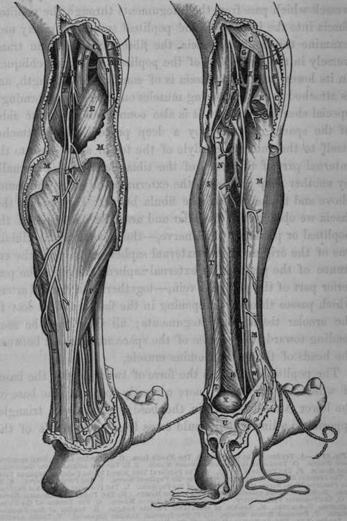

The Popliteal Space
Description
This section is from the book "Anatomy Of The Arteries Of The Human Body", by John Hatch Power. Also available from Amazon: Anatomy of the Arteries of the Human Body, with the Descriptive Anatomy of the Heart.
The Popliteal Space
This name is given to the hollow in the posterior region of the knee-joint. It occupies about the inferior third of the posterior part of the thigh, and the superior fifth of the back part of the leg. On raising the integuments, we bring into view a layer of adipose and areolar tissue: in this layer we notice the terminating filaments of the posterior cutaneous nerve of the thigh, which is a branch of the sacral plexus; and sometimes we find the posterior saphena vein: when this vein is so superficial, it passes through a small opening in the popliteal fascia and joins the popliteal vein: we find also in this stage of the dissection some minute veins and lymphatic vessels which pass from the integuments through the popliteal fascia into the interior of the popliteal space. We may next examine the popliteal fascia, the fibres of which run transversely in the upper part of the popliteal space, and obliquely in its lower part. The fascia is of considerable strength, and is attached to the hamstring muscles on either side, forming a special sheath for each: it is also connected along the sides of the space, internally by a deep process which attaches itself to the internal condyle of the femur above, and to the internal part of the head of the tibia below, and externally by another deep process to the external condyle of the femur above and to the head of the fibula below. Underneath this fascia we observe the muscular and articular branches of the popliteal or posterior tibial nerve,—the communicans tibialis one of the origins of the external saphenous nerve,—the entrance of the posterior or external saphena vein into the posterior part of the popliteal vein,—together with a small artery which passes through an opening in the fascia and is lost in the areolar tissue and integuments; all these may be seen tending towards the surface of the space and situated between the heads of the gastrocnemius muscle.
Fig. 62. Surgical Anatomy of the Popliteal Space and posterior part of Leg. 62 A. 62 B.
The popliteal space has the form of two triangles, the bases of which are united; or, more correctly speaking, the base of the lower is received within the base of the upper triangle, opposite to a line which would cross from one condyle of the femur to the other. The superior triangle is bounded by the hamstring muscles; viz., on the outside by the tendon of the biceps; and on the inside by the semi-membranosus muscle, and the tendons of the sartorius, gracilis, and semi-tendinosus. The inferior triangle is bounded on the inside by the inner head of the gastrocnemius, and on the outside by the outer head of the gastrocnemius and the origin of the plantaris muscle: the origins of these muscles are situated between the inner and outer hamstring muscles. The fibular division of the great sciatic nerve may be seen descending obliquely outwards between the tendon of the biceps muscle and the outer head of the gastrocnemius; in this situation it becomes flattened and expanded: the slender tendon of the semi-tendinosus muscle may also be observed descending between the inner head of the gastrocnemius and the fibres of the semi-membranosus muscle. It may be observed that the outer boundary, or biceps muscle, is tied down to the femur by the origin of its short head, while the hamstring muscles on the inside have not the same close attachment; and therefore the popliteal space is more open in this direction. The popliteal or posterior tibial nerve descends along the external margin of the semi-membranosus muscle: in front of the nerve, and occupying the centre of the space, we find the popliteal vein, and still more in front, nearer to the articulation of the knee, we find the popliteal artery: at the top of the space both of these vessels are overlapped by the outer portion of the semi-membranosus muscle.
Fig. 62 A. A, Tendon of the Gracilis. B, The Fascia Lata. C, C, Tendon of the Semi-membra-nosus Muscle. D, Tendon of the Semi-tendinosus Muscle. E.E, The two origins of the Gastrocnemius Muscle. F, The Popliteal Artery. G, The Popliteal Vein joined by the Posterior Saphena Vein. H, The Internal division of the great Sciatic or the Popliteal Nerve. I, The Peroneal Nerve. K. K, The Posterior Tibial Nerve, the continuation of the Popliteal. L, The Posterior or External Saphena Vein. M, M, The Fascia covering the Gastrocnemius Muscle. N, The Posterior Saphenous Nerve. O, O, The Posterior Tibial Artery. P, Portion of the Soleus Muscle. Q, The Tendon of the Flexor Digitorum Communis. R, Tendon of the Flexor Pollicis Lougus. S, Tendon of the Peroneus Longus. T, Peroneus Brevis Muscle. U, U, The Internal Annular Ligament. V, Tendo Achillis. W, Tendon of the Tibialis Posticus Muscle. X, The Veins accompanying the Posterior Tibial Artery.
Fig. 62 B. A, C, D, E, F, G, H, I, Same as in Fig. A. B, The Internal Condyle of the Femur. K, The Plantaris Muscle lying posterior to the Popliteal Artery previously to its bifurcation. L, The, Popliteus Muscle. M, M,The Tibia. N, N. The Fibula. O, O, The Posterior Tibial Artery. P, The Peroneal Artery. B, S, T, T, U, U, V, W, Same as in Fig. A. X, The Astragalus.
Continue to: